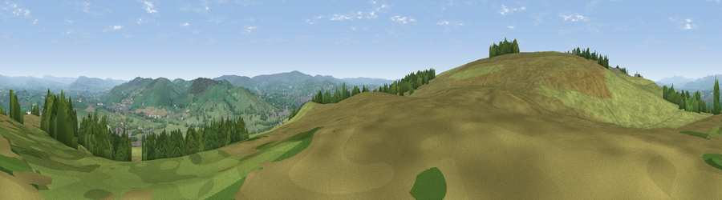

Viewpoint near Salterforth
#13236 in England · top 24% of its area beats it · near SalterforthWhere it is
The exact computed spot (SD 87275 44475). Click the marker for map links.
The view, rendered

A 360° render of this exact spot computed from the terrain model, tree cover and land cover — summer colours, afternoon light, calibrated against photographs of famous viewpoints. Real trees, hedges and buildings will differ in detail.
The panorama
Grey silhouette: terrain skyline in each direction (720 bearings, Earth curvature and refraction included). Dashed green: skyline with trees (+15 m) and buildings (+8 m) as obstacles. Blue strip: how far the ground is visible on each bearing.
Where the view opens
Wedge length = distance to the farthest visible ground on that bearing (vegetation-aware). Rings at 10, 25 and 50 km.
What fills the view
82% grassland · 15% woodland · 3% built-up ·
Angular shares of the visible panorama (visual magnitude), not map area. Landscape diversity 0.25 (0–1 Shannon).
Key numbers
More beautiful places nearby
The staircase of upgrades: each row has a higher view potential than everything closer. Driving times are estimates from straight-line distance, calibrated against real road routing — check an actual route before setting out.
| Place | Direction | Drive | Score |
|---|---|---|---|
| Viewpoint near Barnoldswick | NW · 1 km | ~2 min | 60.5 |
| Viewpoint near Barnoldswick | WNW · 1 km | ~3 min | 62.1 |
| Weets Hill | WNW · 2 km | ~4 min | 69.3 |
| Viewpoint near Barley | WSW · 7 km | ~15 min | 76.3 |
| Pendle Hill | WSW · 7 km | ~15 min | 76.5 |
| Viewpoint near Edenfield | S · 26 km | ~42 min | 77.5 |
| Darwen Hill | SW · 30 km | ~47 min | 80.7 |
| Rivington Pike | SW · 38 km | ~57 min | 81.9 |
53.89629, -2.19513 · source: screening · position refined by local search. Computed location — check access rights before visiting.